POSTUPAK · RADNI LIST V04 · FLUIDSIM
Postupak V04 · vježbe V7, V8 i V10 · 6 sati
Postupak V04 — funkcija I, vremenski član i tlačno upravljanje u FluidSIM-u
Cijeli radni list V04 korak po korak: logička funkcija I s ventilom dvostrukog tlaka i serijskim spojem, vremenski član s kašnjenjem ukapčanja i tlačno upravljanje proslijednim tlačnim ventilom. Uz svaki korak su snimke zaslona i potpuna rješenja.
- složiti funkciju I ventilom dvostrukog tlaka i serijskim spojem
- proširiti funkciju I na tri uvjeta
- složiti vremenski član s kašnjenjem ukapčanja i namjestiti vrijeme otvorom prigušnice
- pokazati ovisnost vremena kašnjenja o tlaku mreže
- složiti tlačno upravljanje proslijednim tlačnim ventilom i pratiti tlak manometrom
- objasniti prerano prebacivanje pri prigušivanju odvoda i ispraviti ga graničnim ventilom
O postupku
Ova stranica je postupak za radni list V04: sve što se radi na računalu, od nove sheme do predaje, redom kojim je zadano. Tekst zadatka, sheme, pitanja i rješenja isti su kao na stranicama vježbi V7 Logička funkcija I — ventil dvostrukog tlaka i V8 Vremenski član — kašnjenje ukapčanja signala i V10 Tlačno upravljanje proslijednim tlačnim ventilom; ovdje su dopunjeni koracima u FluidSIM-u i rezultatima simulacije.
Rješenja su skrivena ispod svakog pitanja. Najprije riješite sami, a onda otvorite Prikaži rješenje i usporedite.
Gotove sheme (rješenja) za FluidSIM
- PIH_V07_rjesenje_v01.ct — dio A: shema V7.1 (ventil dvostrukog tlaka 1V1)
- PIH_V07_serijski_spoj_v01.ct — dio A: serijski spoj 1S1 → 1S2
- PIH_V07_z7_rjesenje_v01.ct — dio A, zadatak 7: tri uvjeta
- PIH_V08_rjesenje_v01.ct — dio B: shema V8.1 (vremenski član 1V1, otvor 9 %, spremnik 0,04 l)
- PIH_V10_rjesenje_v01.ct — dio C: shema V10.1 (proslijedni tlačni ventil 0,45 MPa, otpor 500 N, manometar)
- PIH_V10_prigusen_odvod_v01.ct — dio C: pokus s prigušivanjem odvoda
- PIH_V10_z5_rjesenje_v01.ct — dio C, zadatak 5: granični ventil 1S2 napaja 1V2
Datoteke se otvaraju u FluidSIM-P 4 (File → Open). Snimke zaslona napravljene su u FluidSIM-P 4.2 s engleskim sučeljem. Osnove rada u FluidSIM-u (nova shema, knjižnica, crtanje vodova, provjera, simulacija, dijagram put–korak) opisane su u Postupku V01, odjeljak 0.
0 · Prije početka
- File → New (Ctrl + N) otvara novu shemu; Window → Tile Vertically (Shift + F4) postavlja shemu i knjižnicu jednu uz drugu.
- Elemente povucite iz knjižnice na shemu i dvoklikom otvorite njihove dijaloge. Vod crtajte povlačenjem od priključka do priključka; povlačenjem na postojeći vod nastaje račvanje.
- Oznake (1A1, 1V1, 1S1, 0Z1 …) upisuju se elementom Text iz skupine Miscellaneous (uključite Frame Text).
- Execute → Check Superficially (F6) provjerava crtež; Start (F9), Pause (F8), Stop (F5).
- Ručno tipkalo aktivirate klikom mišem (dok držite tipku miša); Shift + klik zadrži ga pritisnutim. Ručica sa zasunom prebacuje se jednim klikom i ostaje u položaju.
- Granični ventil veže se uz cilindar oznakom: dvoklik na cilindar → kartica Actuating Labels → oznaka (npr. 1S2) i položaj na hodu (od–do u mm); ista oznaka upiše se dvoklikom na valjak graničnog ventila (Mechanical connection → Label).
- Dijagram put–korak: iz Miscellaneous povucite State Diagram i na njega povucite cilindre i ventile čije stanje želite pratiti.
Dio A · V7 Logička funkcija I — ventil dvostrukog tlaka
Zadatak
Na montaži okova zakivaju se čelične zakovice u nosače od lima. Zakovni žig pokreće dvoradni cilindar 1A1 Ø50/20 mm s hodom 60 mm, a za oblikovanje glave zakovice treba oko 900 N. Obradak se ulaže u napravu u kojoj pritišće valjak graničnog ventila 1S2 (3/2 NC) — to je potvrda da je obradak na mjestu. Radnik zatim pritisne tipkalo 1S1 (3/2 NC).
Žig smije krenuti samo kada su oba signala prisutna. Signali se spajaju u ventilu dvostrukog tlaka 1V1 (ventil I), čiji izlaz upravlja razvodnikom 5/2 s pneumatskim upravljanjem i povratnom oprugom (1V2). Klipnjača je izvučena dok traju oba signala; nestankom bilo kojega vraća se. Mreža daje 6 bar, stupanj djelovanja cilindra je 0,9, a zakiva se oko 8 komada u minuti.
Složite sklop, provjerite tablicu stanja, usporedite ga sa serijskim spojem i izmjerite izlazni tlak ventila I pri različitim ulaznim tlakovima.
Sigurnost pri radu
Pažnja
Cilindar Ø50 pri 6 bar daje više od 1 kN — dovoljno da ozbiljno ozlijedi prst. Na didaktičkoj ploči ne stavljajte ruke pred klipnjaču ni pri ispitivanju „uvjeta". Zapamtite i ono što se u ovoj vježbi dokazuje: ventil I s dva obična tipkala nije zaštitni uređaj. Stvarne preše štite se sklopovima za dvoručno uključivanje koji ispunjavaju zahtjeve norme za takve uređaje, zaštitnim poklopcima ili svjetlosnim zavjesama.
Shema
Ventil dvostrukog tlaka ima dva ulaza 1 i izlaz 2. Pomični klip s dvije brtvene čašice zatvara onaj ulaz na koji prvi dođe tlak; izlaz dobiva zrak tek kada tlak dođe i na drugi ulaz. Na slici V7.1 izlaz ventila 1V1 vodi na priključak 14 razvodnika 1V2. Ventil s valjkom 1S2 nacrtan je u mirovanju jer u početnom položaju obradak nije u napravi.
Vježba se radi u FluidSIM-u
Koraci postupka vježbe koji se odnose na spajanje na didaktičkoj ploči i mjerenje štopericom ili manometrom izvode se u simulaciji. Gdje simulacija ne može pokazati pojavu iz pokusa, to je napisano uz korak.
A1 · Shema V7.1 u FluidSIM-u
- File → New, 0Z1 (0,6 MPa). Dvoradni cilindar 1A1: hod 60 mm, Ø 50 / 20 mm.
- 1S1: 3/2 NC s tipkalom. 1S2: 3/2 NC s valjkom (obradak u napravi); da ga u simulaciji možete aktivirati mišem, u dijalogu mu uz valjak dodajte i tipkalo (Manually = pushbutton).
- Iz Shutoff Valves and Flow Control Valves povucite Two pressure valve (ventil dvostrukog tlaka) — 1V1; izlaz na 14 razvodnika 5/2 s pneumatskim upravljanjem i oprugom 1V2.
- Start: samo 1S1 — ništa; samo 1S2 — ništa; oba — žig izlazi (Slika A1.1). Korak 4 postupka: zabravite 1S1 (Shift + klik), pa pritisnite 1S2 — žig krene u trenutku „umetanja obratka”.
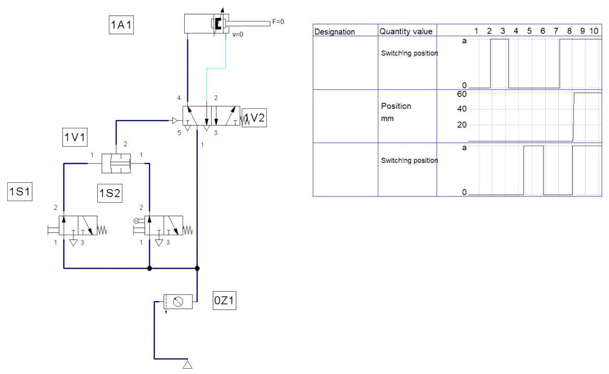
A2 · Serijski spoj
- Shemu spremite pod drugim imenom, obrišite ventil I i 1S2 napojite iz izlaza 2 ventila 1S1; izlaz 1S2 vodite na 14 (serijski spoj).
- Start i ispitajte četiri stanja: ponašanje je isto kao s ventilom dvostrukog tlaka (Slika A2.1).
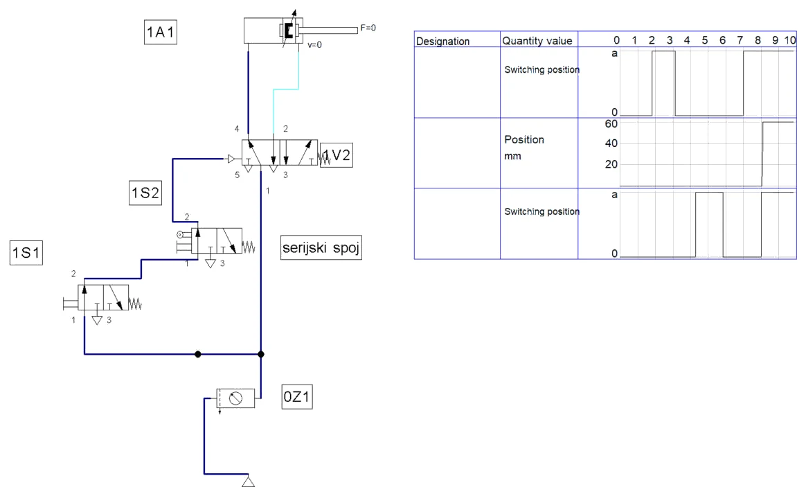
Pokus s 3 i 6 bar
FluidSIM-ov ventil dvostrukog tlaka propušta niži od dvaju ulaznih tlakova, ali za pokus iz koraka 6 trebali biste u shemu dodati regulator tlaka u jedan signalni vod i manometar na izlaz 1V1. Odgovor je u pitanju 4.
Rezultati u tekstu odnose se na našu simulaciju i priložene datoteke; vaša se vremena mogu malo razlikovati ako drukčije namjestite protoke ili otvore prigušnica.
A3 · Pitanja i zadaci
1. Popunite tablicu stanja funkcije I i napišite logički izraz.
Prikaži rješenje
0 0 → 0; 1 0 → 0; 0 1 → 0; 1 1 → 1. Izlaz je 1 samo kada su oba ulaza 1: Y = 1S1 ∧ 1S2 („1S1 i 1S2"). Žig se giba samo u jednom od četiriju stanja.
2. Je li cilindar Ø50 pri 6 bar dovoljan za zakivanje? Koji je najmanji tlak pri kojem zakovica još dobiva punu glavu?
Prikaži rješenje
A = π · 50² / 4 = 1963,5 mm²; F = 0,6 · 1963,5 · 0,9 = 1060 N > 900 N, rezerva 18 %.
pmin = 900 / (1963,5 · 0,9) = 0,509 N/mm² = 5,1 bar. Pad tlaka u mreži ispod 5,1 bar dao bi nedovršene glave zakovica, pa je dobro ugraditi manometar uz prešu ili nadzirati tlak.
3. Izračunajte potrošnju zraka po ciklusu i u minuti (8 ciklusa).
Prikaži rješenje
Apr = 1963,5 − 314,2 = 1649,3 mm². V = (1963,5 + 1649,3) · 60 · 6,923 / 10⁶ = 1,50 Nl po ciklusu; u minuti 8 · 1,50 = 12,0 Nl/min.
4. U koraku 6 na ulazima je 3 bar i 6 bar. Koliki je tlak na izlazu? Što bi se dogodilo pri 2 bar na jednom ulazu?
Prikaži rješenje
Na izlazu je niži od dvaju tlakova, 3 bar: viši tlak pomakne klip ventila tako da njegova čašica zatvori prolaz s ulaza višeg tlaka, a na izlaz prolazi zrak nižeg tlaka. Pri 2 bar na izlazu je 2 bar, što je blizu tlaka prebacivanja razvodnika 1V2 — razvodnik može prebaciti nesigurno ili nikako. Ventil dvostrukog tlaka tako se ponaša suprotno od naizmjeničnog ventila, koji propušta viši tlak.
5. Usporedite ventil dvostrukog tlaka sa serijskim spojem iz koraka 5. Navedite po jednu prednost svakog rješenja.
Prikaži rješenje
Oba daju funkciju I. Serijski spoj je jednostavniji i jeftiniji (nema dodatnog ventila), ali drugi ventil dobiva zrak tek kroz prvi, pa signali moraju biti fizički blizu i jedan element ovisi o drugome. Ventil dvostrukog tlaka prima dva neovisna signala koji mogu doći s bilo kojeg mjesta u sklopu i iz različitih izvora, a sklop je pregledniji za dijagnostiku. Kod serijskog spoja nema gubitka zbog dodatnog elementa, dok ventil I unosi mali pad tlaka i obujam.
6. Što se dogodilo u koraku 4, kada je radnik prvo pritisnuo tipkalo, a tek onda umetnuo obradak? Zašto je to opasno i kako se sprječava?
Prikaži rješenje
Klipnjača je krenula u trenutku umetanja obratka, dok je radnikova ruka još u napravi. Funkcija I ne razlikuje redoslijed signala: dovoljno je da su oba prisutna. Sprječava se tako da signal tipkala bude kratak impuls koji vrijedi samo ako je obradak već na mjestu (npr. ventil koji daje impuls samo pri pritisku), ili — za stvarnu prešu — ispravnim sklopom za dvoručno uključivanje i zaštitom zone rada.
U FluidSIM-u
U simulaciji: Shift + klik na 1S1 (tipkalo ostaje pritisnuto), zatim pritisak na 1S2 — klipnjača odmah krene (Slika A1.1, treće stanje).
7. Dodajte treći uvjet: zaštitni poklopac mora biti zatvoren, što potvrđuje ventil s valjkom 1S3. Nacrtajte signalni dio.
Prikaži rješenje
Za tri uvjeta potrebna su dva ventila dvostrukog tlaka u nizu: 1V1 povezuje 1S1 i 1S2, a 1V2 izlaz ventila 1V1 i signal 1S3. Izlaz 1V2 vodi na 14 razvodnika, koji sada nosi oznaku 1V3. Isto se može izvesti i serijskim spojem svih triju ventila.
U FluidSIM-u
- Dodajte 1S3 (valjak + tipkalo za simulaciju) i drugi ventil dvostrukog tlaka: 1V1 povezuje 1S1 i 1S2, 1V2 izlaz 1V1 i 1S3, izlaz 1V2 na 14 razvodnika 1V3.
- Start: klipnjača izlazi samo kada su sva tri signala prisutna (Slika A3.1).
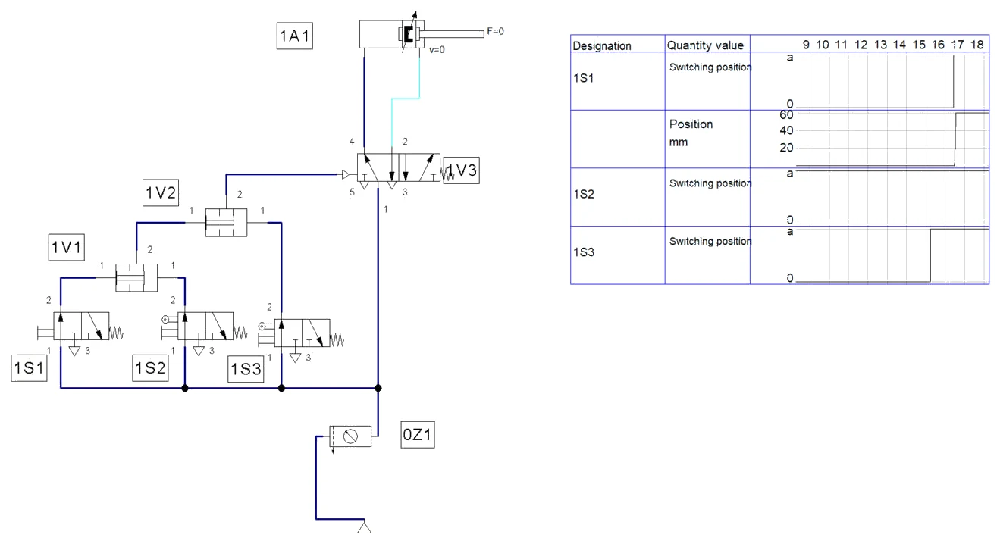
8. Netko predlaže da se za zaštitu ruku umjesto tipkala 1S1 i ventila 1S2 ugrade dva tipkala, po jedno za svaku ruku, spojena u ventil I. Zašto to nije ispravno dvoručno uključivanje?
Prikaži rješenje
Ventil I samo traži da su oba signala prisutna. On ne provjerava jesu li tipkala pritisnuta istodobno (unutar približno 0,5 s), ne traži da se oba otpuste prije novog ciklusa i ne otkriva ako je jedno tipkalo trajno zaglavljeno ili vezano. Radnik tako može jedno tipkalo blokirati i prešu pokretati jednom rukom. Sklop za dvoručno uključivanje mora ispuniti sve te zahtjeve i biti izveden kao certificirani sigurnosni element.
Dio B · V8 Vremenski član — kašnjenje ukapčanja signala
Zadatak
Na liniji za sklapanje kućišta rasvjetnih tijela lijepi se prozirni poklopac na okvir. Nakon nanošenja ljepila radnik uloži dijelove u napravu i pritisne tipkalo 1S1. Dvoradni cilindar 1A1 Ø40/16 mm s hodom 40 mm preko ploče pritisne poklopac, a ljepilo treba 4 s pod pritiskom da bi spoj početno očvrsnuo. Nakon toga se klipnjača sama vraća.
Cilindrom upravlja bistabilni razvodnik 5/2 (1V2). U prednjem krajnjem položaju klipnjača pritisne granični ventil s valjkom 1S2, čiji signal ne ide izravno na razvodnik, nego u vremenski član 1V1 s kašnjenjem ukapčanja. Vremenski član sastoji se od prigušno-nepovratnog ventila, malog spremnika i razvodnika 3/2 NC s pneumatskim upravljanjem. Uzmimo da je obujam spremnika 40 cm³, tlak prebacivanja razvodnika 3/2 2,5 bar, a da kroz namještenu prigušnicu struji približno stalnih 1,5 Nl/min. Mreža daje 6 bar; površina lijepljenja je 25 × 60 mm.
Složite sklop, namjestite vrijeme držanja na 4 s, izmjerite ga i odgovorite na pitanja.
Sigurnost pri radu
Pažnja
Tijekom vremena držanja klipnjača stoji, ali pritišće punom silom od gotovo 680 N — to nije „mirno" stanje u kojem se smije posegnuti u napravu. Prije puštanja tlaka provjerite položaj bistabilnog razvodnika. Spremnik vremenskog člana ostaje pod tlakom i nakon zatvaranja uklopnog ventila ako je nepovratni ventil u krivom smjeru: prije rastavljanja provjerite manometrom da je tlak pao na nulu.
Shema
Vremenski član na slici V8.1 nacrtan je unutar iscrtkanog okvira jer čini jednu cjelinu. Signal iz 1S2 ulazi s lijeve strane i puni spremnik kroz prigušnicu; nepovratni ventil tada je zatvoren. Kada signal nestane, spremnik se prazni brzo, kroz nepovratni ventil, natrag prema ispuhu ventila 1S2. Tlak iz spremnika djeluje na upravljački priključak 12 razvodnika 3/2, koji iz mreže propušta signal na priključak 12 bistabilnog razvodnika 1V2.
Vježba se radi u FluidSIM-u
Koraci postupka vježbe koji se odnose na spajanje na didaktičkoj ploči i mjerenje štopericom ili manometrom izvode se u simulaciji. Gdje simulacija ne može pokazati pojavu iz pokusa, to je napisano uz korak.
B1 · Shema V8.1 u FluidSIM-u
- File → New, 0Z1 (0,6 MPa). Dvoradni cilindar 1A1: hod 40 mm, Ø 40 / 16 mm; Actuating Labels: 1S2 na 38–40 mm.
- Bistabilni razvodnik 1V2 (5/2-way impulse valve). Tipkalo 1S1 (3/2 NC) → 14.
- Granični ventil 1S2 (3/2 NC, valjak, bez Piloted, oznaka 1S2) ne vodi izravno na razvodnik, nego na ulaz 12 vremenskog člana.
- Iz Valve Groups povucite Time delay valve, normally closed — 1V1. To je gotova skupina: prigušno-nepovratni ventil, spremnik i razvodnik 3/2 NC. Ulaz 1 napojite iz 0Z1, izlaz 2 vodite na 12 razvodnika 1V2 (Slika B1.1).
- Dvoklik na 1V1: Opening Level (otvor prigušnice), Accumulator 0,04 l (40 cm³), Throttle 10 l/min (Slika B1.2).
- F6, State Diagram s 1A1, 1S1, 1S2 i 1V1.
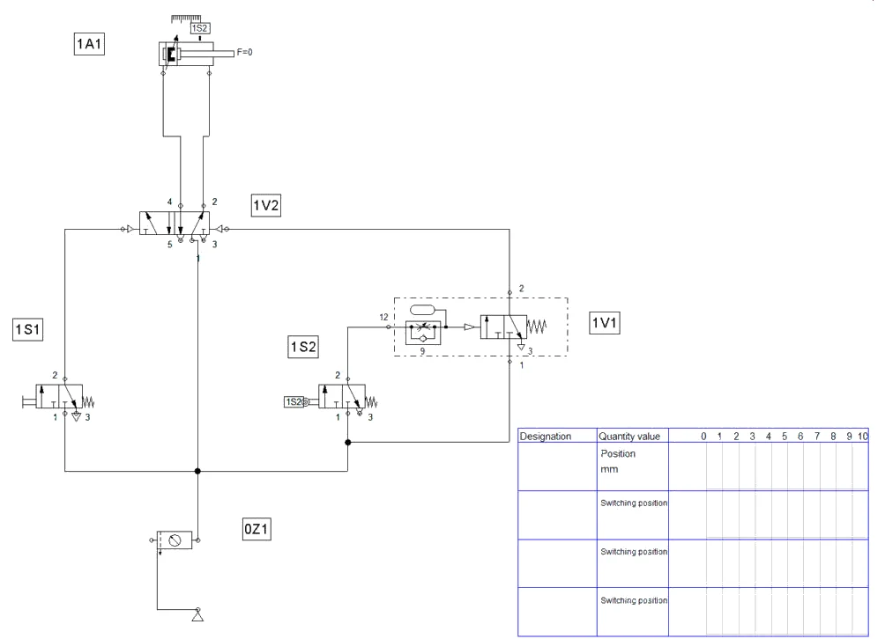
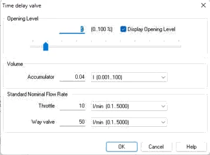
B2 · Namještanje vremena
- Start, kratko pritisnite 1S1. Klipnjača izađe, pritisne 1S2, a povrat počinje tek kad tlak u spremniku dosegne tlak prebacivanja razvodnika 3/2.
- Na dijagramu izmjerite vrijeme od trenutka kad 1S2 postane 1 do početka povrata. Mijenjajte otvor prigušnice: u našoj simulaciji 15 % daje oko 2,2 s, 8 % oko 4,6 s, a 9 % oko 4,1 s (Slika B2.1).
- Bez promjene otvora spustite tlak na 0,5 MPa: vrijeme držanja naraste na oko 4,9 s. Vratite 0,6 MPa.
- Izlaz vremenskog člana na dijagramu je kratak impuls: nestaje čim klipnjača napusti 1S2, jer se spremnik prazni kroz nepovratni ventil.
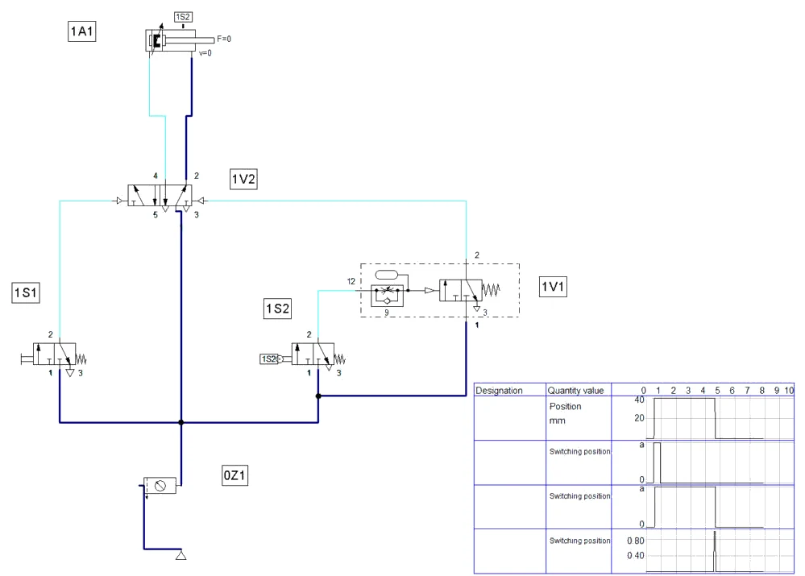
Rezultati u tekstu odnose se na našu simulaciju i priložene datoteke; vaša se vremena mogu malo razlikovati ako drukčije namjestite protoke ili otvore prigušnica.
B3 · Pitanja i zadaci
1. Od kojih se dijelova sastoji vremenski član s kašnjenjem ukapčanja i koju ulogu ima svaki od njih?
Prikaži rješenje
Prigušnica ograničava protok zraka u spremnik i time određuje brzinu porasta tlaka. Nepovratni ventil usporedo s prigušnicom omogućuje brzo pražnjenje spremnika nakon nestanka signala. Spremnik je obujam koji se puni; što je veći, to je kašnjenje dulje. Razvodnik 3/2 NC s pneumatskim upravljanjem prebaci kada tlak u spremniku dosegne tlak prebacivanja i tada propusti puni signal iz mreže na izlaz 2.
2. Procijenite vrijeme kašnjenja za zadane vrijednosti: V = 40 cm³, tlak prebacivanja 2,5 bar, protok kroz prigušnicu 1,5 Nl/min.
Prikaži rješenje
Da bi se tlak u spremniku podigao s 0 na 2,5 bar pretlaka, u njega treba utjerati zrak obujma V · Δp / pa (preračunato na normalno stanje):
Vn = 0,040 l · 2,5 / 1,013 = 0,0987 Nl.
t = Vn / Qn = 0,0987 Nl / 1,5 Nl/min = 0,0658 min = 3,95 s ≈ 4 s.
Pretpostavka stalnog protoka vrijedi dok je tlak iza prigušnice manji od približno 0,53 apsolutnog tlaka ispred nje (7,013 · 0,528 − 1,013 = 2,69 bar pretlaka) — tlak prebacivanja od 2,5 bar je unutar tog područja. Ovo je pojednostavljeni model; stvarno vrijeme uvijek se namješta mjerenjem.
U FluidSIM-u
U FluidSIM-u se procjena provjerava otvorom prigušnice: uz spremnik 0,04 l vrijeme od oko 4 s dobili smo pri otvoru 9 %.
3. Za drugi proizvod treba 6 s. Koliki bi spremnik trebao uz istu prigušnicu? Što je u praksi jednostavnije?
Prikaži rješenje
Uz isti protok vrijeme raste razmjerno obujmu: V = 40 cm³ · 6 / 3,95 = 61 cm³. U praksi je jednostavnije pritvoriti prigušnicu dok se ne izmjeri 6 s; spremnik se mijenja kada je potrebno kašnjenje izvan raspona prigušnice (npr. više od 30 s).
4. Što se događa s vremenom kašnjenja kad tlak u mreži padne sa 6 na 5 bar? Potkrijepite procjenom.
Prikaži rješenje
Pri kritičnom strujanju protok kroz prigušnicu približno je razmjeran apsolutnom tlaku ispred nje: Qn = 1,5 · 6,013 / 7,013 = 1,29 Nl/min, pa je t = 0,0987 / 1,29 · 60 ≈ 4,6 s. Uz to granica kritičnog strujanja pada na 0,528 · 6,013 − 1,013 = 2,16 bar, što je ispod tlaka prebacivanja, pa se punjenje pri kraju dodatno usporava i stvarno je vrijeme još dulje. Zaključak: vrijeme pneumatskog vremenskog člana ovisi o tlaku, pa za stalno vrijeme treba stalan tlak (regulator).
U FluidSIM-u
U našoj simulaciji, uz isti otvor (9 %), vrijeme pri 5 bar naraste s oko 4,1 s na oko 4,9 s — isti smjer kao u procjeni.
5. Nacrtajte dijagram put–vrijeme cilindra 1A1 i dijagram signala 1S2 i izlaza vremenskog člana za jedan ciklus. Uzmite izvlačenje 0,5 s, držanje 4 s i uvlačenje 0,4 s.
Prikaži rješenje
Signal 1S2 postaje 1 kada klipnjača dođe u prednji položaj. Izlaz vremenskog člana postaje 1 tek 4 s kasnije i tada počinje povrat. Čim klipnjača napusti 1S2, spremnik se prazni kroz nepovratni ventil i izlaz se vraća na 0 — izlaz je zato kratak impuls.
6. Kolika je sila i srednji tlak na lijepljenoj površini 25 × 60 mm? Kolika je potrošnja zraka po ciklusu?
Prikaži rješenje
A = π · 40² / 4 = 1256,6 mm²; F = 0,6 · 1256,6 · 0,9 = 679 N. Tlak na spoju: 679 N / 1500 mm² = 0,45 N/mm² (0,45 MPa).
Apr = 1256,6 − 201,1 = 1055,6 mm²; V = (1256,6 + 1055,6) · 40 · 6,923 / 10⁶ = 0,64 Nl po ciklusu. Zrak za punjenje spremnika vremenskog člana (≈ 0,1 Nl) nije uključen.
7. Zašto je nepovratni ventil u vremenskom članu važan? Što biste izmjerili u koraku 7 bez njega?
Prikaži rješenje
Bez nepovratnog ventila spremnik bi se i praznio kroz prigušnicu, dakle sporo. Ako bi novi ciklus počeo prije nego se spremnik isprazni, u njemu bi ostao dio tlaka i sljedeće bi kašnjenje bilo kraće. Nepovratni ventil osigurava da svaki ciklus počne s praznim spremnikom, pa je vrijeme ponovljivo.
8. Radnik drži tipkalo 1S1 pritisnutim cijelo vrijeme lijepljenja. Što se događa nakon isteka 4 s?
Prikaži rješenje
Signal 12 iz vremenskog člana dolazi dok je signal 14 još prisutan. Bistabilni razvodnik zadržava položaj „izvlačenje", pa se klipnjača ne vraća dok se 1S1 ne otpusti; tada signal 12 (koji traje dok je 1S2 pritisnut) vraća klipnjaču. To je isti blokirajući signal kao u vježbi s graničnim ventilom; rješava se impulsnim signalom starta ili nekom od metoda upravljanja.
Dio C · V10 Tlačno upravljanje proslijednim tlačnim ventilom
Zadatak
U montaži malih reduktora u kućište od aluminija utiskuje se kuglični ležaj. Ležaj mora sjesti na naslon u provrtu, ali se ne smije utisnuti silom većom od 800 N, jer bi se oštetile staze kotrljanja. Duljina puta do naslona malo se mijenja od komada do komada, pa se povrat ne može pouzdano pokretati graničnim ventilom. Umjesto toga povrat pokreće tlak: kada ležaj sjedne, klipnjača stane, tlak u komori klipa raste i pri namještenoj vrijednosti proslijedni tlačni ventil daje signal za povrat.
Utiskuje dvoradni cilindar 1A1 Ø50/20 mm s hodom 60 mm (η = 0,9). Radnik pokreće ciklus tipkalom 1S1, koje daje signal 14 bistabilnom razvodniku 5/2 (1V1). Komora klipa povezana je mjernim vodom s proslijednim tlačnim ventilom 1V2, koji se sastoji od tlačnog pilot-ventila s podesivom oprugom i razvodnika 3/2 NC; njegov izlaz daje signal 12. Sila otpora pri utiskivanju prije sjedanja iznosi oko 500 N. Mreža daje 6 bar.
Izračunajte tlak prebacivanja, složite sklop, namjestite ga i ispitajte, uključujući pokus s prigušivanjem odvoda.
Sigurnost pri radu
Pažnja
U ovom sklopu klipnjača namjerno pritišće čvrst graničnik — graničnik mora biti čvrsto učvršćen i ne smije biti ruka ni alat. Cilindar Ø50 pri punom tlaku daje više od 1 kN. Ako je proslijedni ventil namješten na tlak koji mreža ne može dati, klipnjača ostaje pritisnuta na graničnik neograničeno dugo: sklop se tada zaustavlja zatvaranjem uklopnog ventila, a ne rukom. Tlak prebacivanja namještajte polako i samo alatom predviđenim za to.
Shema
Proslijedni tlačni ventil 1V2 nacrtan je na slici V10.1 u iscrtkanom okviru. Tlak iz komore klipa dolazi mjernim vodom na ulaz tlačnog pilot-ventila i djeluje protiv podesive opruge. Kada tlak nadvlada oprugu, pilot-ventil propušta zrak na upravljački priključak razvodnika 3/2, koji iz mreže daje puni signal na 12 razvodnika 1V1. Mjerni vod spojen je izravno na cilindar, ne na razvodnik.
Vježba se radi u FluidSIM-u
Koraci postupka vježbe koji se odnose na spajanje na didaktičkoj ploči i mjerenje štopericom ili manometrom izvode se u simulaciji. Gdje simulacija ne može pokazati pojavu iz pokusa, to je napisano uz korak.
C1 · Shema V10.1 u FluidSIM-u
- File → New, 0Z1 (0,6 MPa). Dvoradni cilindar 1A1: hod 60 mm, Ø 50 / 20 mm. Otpor utiskivanja: kartica Force profile → Constant force 500 N (Slika C1.1).
- Bistabilni razvodnik 1V1; tipkalo 1S1 → 14.
- Iz Valve Groups povucite Pressure sequence valve (proslijedni tlačni ventil) — 1V2. Dvoklik: Nominal Pressure 0,45 MPa (Slika C1.2).
- Mjerni vod: s voda klipne komore uz sam cilindar (račvanje) na upravljački ulaz 12 ventila 1V2. Ulaz 1 ventila 1V2 iz 0Z1, izlaz 2 na 12 razvodnika 1V1.
- Iz Measuring instruments povucite manometar na mjerni vod. State Diagram: 1A1, 1V1 i manometar (Pressure); u dijalogu dijagrama namjestite Fixed interval 0–2 s.
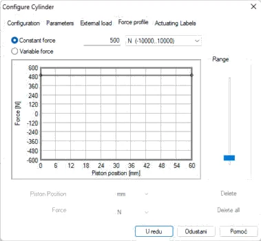
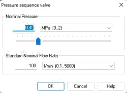
C2 · Simulacija i pokus s prigušivanjem
- Start, kratko pritisnite 1S1. Tijekom hoda tlak u komori klipa je oko 0,3 MPa (≈ 2,8 bar za 500 N). Kad klipnjača stane (u simulaciji na kraju hoda, umjesto graničnika na 50 mm), tlak raste, pri 0,45 MPa 1V2 prebaci i klipnjača se vraća (Slika C2.1).
- Na samom početku hoda vidi se kratki vršak tlaka (ubrzanje klipa); prekratak je da bi prebacio 1V2.
- Pokus s prigušivanjem odvoda: u vod prstenaste komore ugradite prigušno-nepovratni ventil (prigušuje odlazni zrak) i pritvorite ga. Tlak u komori klipa odmah naraste na gotovo 0,6 MPa, 1V2 prebaci prije nego što klipnjača stigne do kraja (Slika C2.2).
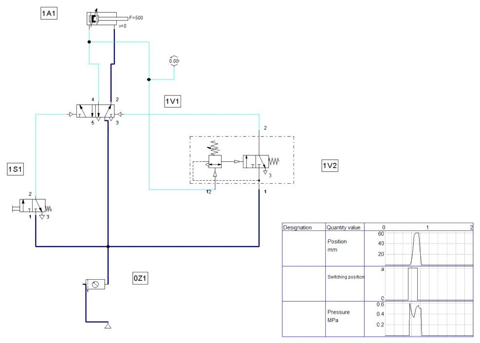
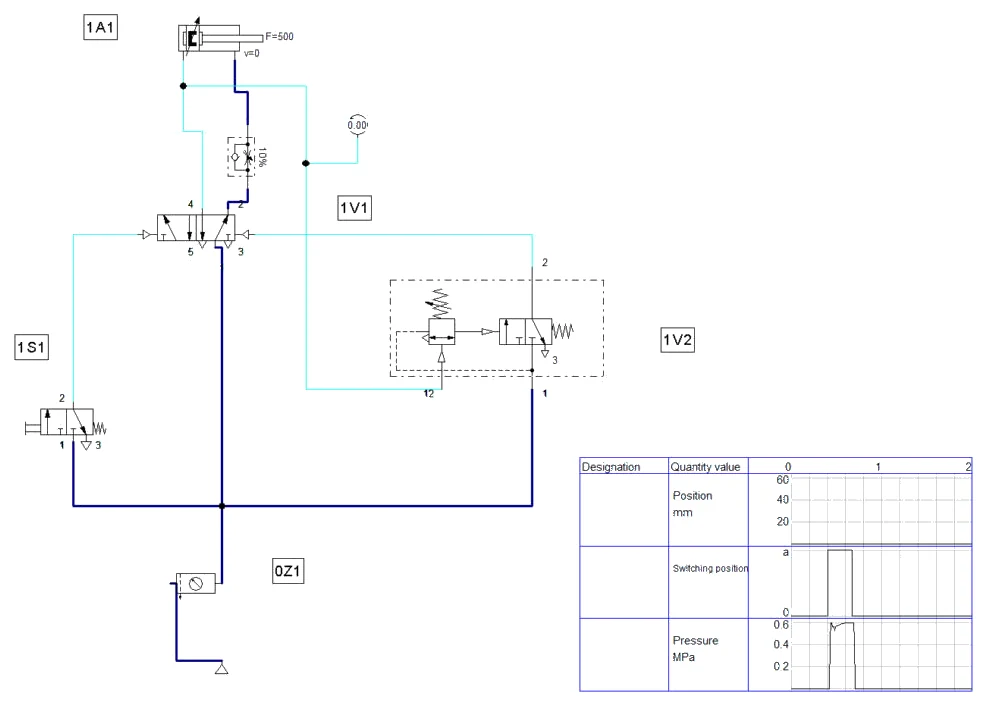
Rezultati u tekstu odnose se na našu simulaciju i priložene datoteke; vaša se vremena mogu malo razlikovati ako drukčije namjestite protoke ili otvore prigušnica.
C3 · Pitanja i zadaci
1. Od čega se sastoji proslijedni tlačni ventil i kako radi? Po čemu se razlikuje od regulatora tlaka?
Prikaži rješenje
Sastoji se od tlačnog pilot-ventila s podesivom oprugom i razvodnika 3/2 NC s pneumatskim upravljanjem. Mjereni tlak djeluje na pilot-ventil protiv opruge; kada ga nadvlada, pilot-ventil prebaci razvodnik 3/2, koji propušta puni tlak iz mreže na izlaz. Rezultat je signal (da/ne) kada tlak prijeđe namještenu vrijednost. Regulator tlaka, naprotiv, ne daje signal, nego održava stalan izlazni tlak i time ograničava silu.
2. Na koliki tlak treba namjestiti proslijedni ventil da se povrat pokrene pri sili utiskivanja 800 N? Kolika je sila pri namještenih 4,5 bar?
Prikaži rješenje
A = π · 50² / 4 = 1963,5 mm². Nakon nalijeganja prstenasta komora je odzračena, pa je sila određena samo tlakom u komori klipa: p = F / (A · η) = 800 / (1963,5 · 0,9) = 0,453 N/mm² = 4,53 bar.
Namješta se 4,5 bar, uz koji je sila 0,45 · 1963,5 · 0,9 = 795 N — malo ispod granice, što je ispravna strana.
3. Koliki je tlak u komori klipa tijekom utiskivanja prije nalijeganja, kad je otpor 500 N? Postoji li opasnost od preranog prebacivanja?
Prikaži rješenje
p = 500 / (1963,5 · 0,9) = 0,283 N/mm² = 2,8 bar (uz zanemariv protutlak u prstenastoj komori). To je 1,7 bar ispod tlaka prebacivanja, pa uz neprigušen odvod nema opasnosti. Tlak skoči na 4,5 bar tek kada ležaj sjedne i klipnjača stane.
4. Zašto je mjerni vod spojen izravno na priključak cilindra, a ne na izlaz 4 razvodnika 1V1?
Prikaži rješenje
Dok zrak struji, u vodu između razvodnika i cilindra nastaje pad tlaka: na izlazu razvodnika tlak je viši nego u komori klipa. Mjerni vod na razvodniku mogao bi zato prebaciti proslijedni ventil tijekom gibanja, prije nego ležaj sjedne. Nakon zaustavljanja tlakovi se izjednače, ali prerano prebacivanje tada je već nastalo. Mjerenjem na cilindru mjeri se upravo tlak koji stvara silu.
5. U koraku 6 klipnjača se vratila prije nego je dotaknula graničnik. Objasnite zašto i dopunite signalni dio tako da se to ne može dogoditi.
Prikaži rješenje
Kod prigušivanja odvoda u prstenastoj komori nastaje protutlak, a da bi se klip gibao, tlak u komori klipa mora ga svladati — pa se i tijekom gibanja približava punom tlaku mreže. Proslijedni ventil vidi 4,5 bar već u hodu i prebacuje prerano. Rješenje je funkcija I: tlačni signal vrijedi samo ako je klipnjača u završnom dijelu hoda. Na slici V10.2 granični ventil 1S2 napaja proslijedni ventil, pa signal 12 nastaje samo kada su ispunjena oba uvjeta. Isto se može izvesti ventilom dvostrukog tlaka.
U FluidSIM-u
- Dodajte granični ventil 1S2 (3/2 NC, valjak); na cilindru oznaka 1S2 na 55–60 mm. Izlaz 1S2 vodite na ulaz 1 proslijednog ventila 1V2 (umjesto izravnog napajanja iz 0Z1).
- Start s istim prigušenim odvodom: tlak u komori klipa je visok cijelim hodom, ali povrat počinje tek kada klipnjača pritisne 1S2 (Slika C3.1).
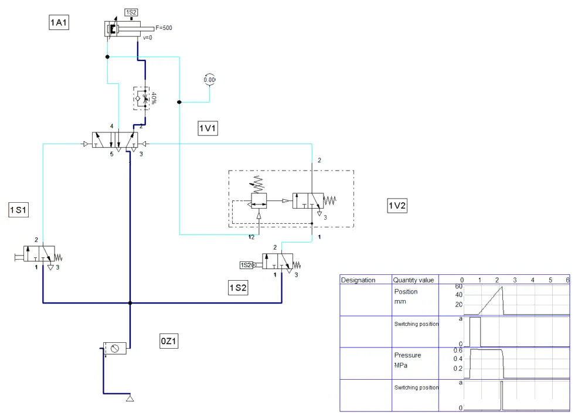
6. Izračunajte potrošnju zraka po ciklusu. Uzmite u obzir da komora klipa na kraju hoda ima samo 4,5 bar, jer razvodnik tada prebaci.
Prikaži rješenje
Komora klipa: 1963,5 · 60 · (4,5 + 1,013) / 1,013 / 10⁶ = 0,1178 l · 5,442 = 0,64 Nl.
Prstenasta komora (puni se na 6 bar pri povratu): Apr = 1649,3 mm²; 1649,3 · 60 · 6,923 / 10⁶ = 0,69 Nl.
Ukupno 1,33 Nl po ciklusu, oko 12 % manje nego kad bi se komora klipa punila na 6 bar (1,50 Nl). (Hod je ovdje uzet kao puni hod od 60 mm; ako ležaj sjedne ranije, potrošnja je razmjerno manja.)
7. Što se dogodilo u koraku 8, kada je tlak mreže bio 4 bar? Kako se takav kvar prepoznaje u pogonu i kako se sprječava?
Prikaži rješenje
Tlak u komori klipa ne može prijeći 4 bar, pa proslijedni ventil namješten na 4,5 bar nikad ne prebacuje. Klipnjača ostaje pritisnuta na ležaj silom 0,4 · 1963,5 · 0,9 = 707 N i ne vraća se — stroj „stoji" usred ciklusa. Prepoznaje se po manometru i po tome što klipnjača ostaje izvučena. Sprječava se nadzorom tlaka mreže (npr. tlačnom sklopkom koja zabranjuje start), namještanjem tlaka prebacivanja s rezervom prema najnižem tlaku mreže i vremenskim nadzorom ciklusa.
U FluidSIM-u
Provjera u simulaciji: pripremnu grupu postavite na 0,4 MPa i pokrenite ciklus; pratite manometar i položaj klipnjače.
8. Zašto se ovdje ne koristi samo granični ventil na kraju hoda, kao u vježbi s automatskim povratom?
Prikaži rješenje
Položaj u kojem ležaj sjedne mijenja se zbog tolerancija kućišta i ležaja. Granični ventil namješten prerano vratio bi klipnjaču prije sjedanja, a namješten prekasno nikad ne bi bio dosegnut ili bi zahtijevao utiskivanje punom silom od 1060 N. Tlačni signal ovisi o sili, pa radi neovisno o točnom položaju naslona. Granični ventil ima smisla kao dodatni uvjet (zadatak 5), ne kao zamjena.
Zapis simulacije
Tablica Zapis: simulacija iz radnog lista, popunjena prema simulaciji u FluidSIM-P 4.2 (rješenje).
| Veličina | Očekivano (proračun / zadatak) | FluidSIM | Komentar |
|---|---|---|---|
| Tablica I (A) | 0 0 → 0; 1 0 → 0; 0 1 → 0; 1 1 → 1 | isto (Slika A1.1); serijski spoj isto (Slika A2.1) | — |
| Vrijeme držanja (B) | 4,0 ± 0,3 s (procjena 3,95 s) | oko 4,1 s pri otvoru 9 % | 15 % → 2,2 s; 8 % → 4,6 s |
| Tlak (B) | 6 bar; pri 5 bar vrijeme dulje | pri 0,5 MPa oko 4,9 s | vrijeme ovisi o tlaku |
| Tlak u hodu (C) | 2,8 bar za 500 N | oko 0,3 MPa | — |
| Tlak prebacivanja (C) | 4,5 bar | 1V2 = 0,45 MPa, povrat nakon zaustavljanja | — |
| Prigušen odvod (C) | prerani povrat | povrat prije kraja hoda (Slika C2.2) | ispravak: 1S2 (Slika C3.1) |
Spremanje i predaja
- File → Save As. U polje Naziv datoteke upišite
PIH_2026-2027_Prezime_Ime_V04.ct(bez kvačica) i kliknite Spremi. Kasnije spremanje: File → Save (Ctrl + S). - Snimka: za vrijeme simulacije (nakon Pause) snimite zaslon sa shemom i dijagramom put–korak (u sustavu Windows: Windows + Shift + S), ili shemu spremite naredbom File → TIFF Export.
- Ispunite radni list (proračuni i zapis simulacije).
- Predajte u sustav za e-učenje: shemu
.ct, snimku zaslona simulacije i ispunjen radni list. Sve datoteke imenujtePIH_2026-2027_Prezime_Ime_….
Primjena na vlastiti zadatak P##
Projekt SL-3, vaša varijanta P## (ulazni podaci u „Projektni zadaci P01–P21”): koji uvjeti moraju biti ispunjeni da ciklus SL-3 smije krenuti (osnovni položaj, lim, tlak)? Napišite ih kao logičku I-funkciju i nacrtajte taj dio sheme. Opis naprave: Projektni zadatak: naprava SL-3 za savijanje lima.
Kod pitanja: susjed → radni list i ova stranica → nastavnik. AI smijete koristiti uz navođenje što je i kako napravljeno.
Za nastavnika
Dio A · vježba V7
Otvori upute za nastavnika
Priprema
Vježba traje 2 sata (2 × 45 min) i logično slijedi vježbu s naizmjeničnim ventilom; ako su obje u istom tjednu, zadrži se isti raspored elemenata na ploči. Pripremite manometar s T-spojnicom i zaseban regulator. Pokus iz koraka 4 najjače djeluje ako ga polaznici izvedu sami; naglasite da se izvodi bez ruku ispred klipnjače, a valjak se pritišće komadom lima.
Tijek sata
- Uvod: funkcija I, simbol i rad ventila dvostrukog tlaka, usporedba s ventilom ILI — 10 min.
- Simulacija i tablica stanja — 10 min.
- Spajanje, ispitivanje četiriju stanja i pokus s redoslijedom signala — 20 min.
- Serijski spoj i pokus s različitim ulaznim tlakovima — 20 min.
- Sklop s tri uvjeta — 15 min.
- Računski zadaci, rasprava o dvoručnom uključivanju, pospremanje — 15 min.
Očekivani rezultati
Tlak na 14 postoji samo u stanju 1 1. Redoslijed signala ne utječe na izlaz — klipnjača kreće s drugim signalom. Serijski spoj daje istu tablicu stanja. Na izlazu ventila I je niži ulazni tlak. Računski: 1060 N, najmanje 5,1 bar, 1,50 Nl po ciklusu i 12,0 Nl/min.
Česte pogreške
- Ventil dvostrukog tlaka zamijeni se s naizmjeničnim — izvana su slični, pa treba provjeriti simbol na kućištu.
- Kod serijskog spoja drugi ventil napaja se iz razdjelnog bloka umjesto iz izlaza prvog.
- Zaključak da je ventil I s dva tipkala dovoljna zaštita ruku.
- Pri računanju površine prstena oduzima se promjer umjesto površine klipnjače.
Vrednovanje
| Kriterij | Bodovi |
|---|---|
| Ispravan spoj i izmjerena tablica stanja | 5 |
| Serijski spoj i usporedba s ventilom I | 3 |
| Pokus s različitim tlakovima: zapis i objašnjenje | 3 |
| Računski zadaci 2 i 3 | 3 |
| Shema i ispitivanje s tri uvjeta | 3 |
| Obrazloženje sigurnosnih pitanja 6 i 8 | 3 |
| Ukupno | 20 |
Dio B · vježba V8
Otvori upute za nastavnika
Priprema
Vježba traje 2 sata (2 × 45 min). Ako je dostupan vremenski član kao jedan element, dobro je da barem jedna skupina složi i inačicu od pojedinačnih dijelova, pa da se rezultati usporede. Manometar na spremniku omogućuje da polaznici vide porast tlaka i očitaju tlak prebacivanja. Pripremite regulator za pokus pri 5 bar.
Tijek sata
- Uvod: dijelovi vremenskog člana, smjer prigušno-nepovratnog ventila, dijagram put–vrijeme — 10 min.
- Simulacija — 10 min.
- Spajanje sklopa i postavljanje graničnog ventila — 20 min.
- Namještanje i mjerenje vremena, očitanje tlaka prebacivanja — 20 min.
- Pokusi pri 5 bar i s dva brza ciklusa — 15 min.
- Računski zadaci, dijagram, pospremanje — 15 min.
Očekivani rezultati
Vrijeme držanja namješteno na 4,0 ± 0,3 s s rasipanjem ponavljanja manjim od 0,2 s. Pri 5 bar vrijeme je primjetno dulje. Uz ispravan nepovratni ventil dva brza ciklusa daju približno jednaka vremena. Računski: 3,95 s; 61 cm³ za 6 s; oko 4,6 s i više pri 5 bar; 679 N, 0,45 N/mm², 0,64 Nl po ciklusu.
Česte pogreške
- Prigušno-nepovratni ventil okrenut obrnuto: spremnik se puni brzo, a prazni sporo — dobiva se kašnjenje iskapčanja umjesto ukapčanja.
- Razvodnik 3/2 u vremenskom članu napaja se iz signala 1S2 umjesto iz mreže, pa izlazni signal ima nizak tlak.
- Vrijeme se mjeri od pritiska na tipkalo, a ne od dolaska klipnjače na 1S2.
- U dijagramu izlaz vremenskog člana crta se kao trajan signal, a ne kao impuls.
Vrednovanje
| Kriterij | Bodovi |
|---|---|
| Ispravan spoj i smjer prigušno-nepovratnog ventila u vremenskom članu | 4 |
| Namješteno i izmjereno vrijeme držanja, zapisan tlak prebacivanja | 4 |
| Pokusi pri 5 bar i s dva brza ciklusa, tumačenje | 3 |
| Računski zadaci 2, 3, 4 i 6 | 5 |
| Dijagram put–vrijeme i odgovori 7 i 8 | 4 |
| Ukupno | 20 |
Dio C · vježba V10
Otvori upute za nastavnika
Priprema
Vježba traje 2 sata (2 × 45 min). Najvažnija priprema je čvrst i siguran graničnik ispred klipnjače (blok učvršćen na ploču, ne u ruci). Provjerite da se proslijedni ventil može namjestiti u području 2–6 bar i da manometar na komori klipa ima dovoljno točnu skalu. Za pokus iz koraka 8 pripremite regulator na glavnoj pripremnoj grupi ili zaseban regulator ispred razdjelnog bloka.
Tijek sata
- Uvod: tlačno upravljanje, dijelovi proslijednog ventila, izračun tlaka prebacivanja — 10 min.
- Simulacija s prikazom tlaka u komorama — 10 min.
- Spajanje, postavljanje graničnika i namještanje tlaka prebacivanja — 25 min.
- Deset ciklusa, pokus s prigušivanjem odvoda i dopuna s 1S2 — 25 min.
- Pokus pri 4 bar — 5 min.
- Računski zadaci, rasprava, pospremanje — 15 min.
Očekivani rezultati
Nakon namještanja klipnjača se vraća kada manometar pokaže 4,5 ± 0,2 bar. S pritvorenim prigušivanjem odvoda povrat nastaje prerano, u hodu; s 1S2 u nizu sklop ponovno radi ispravno. Pri 4 bar u mreži klipnjača se ne vraća. Računski: 4,53 bar za 800 N, 795 N pri 4,5 bar; 2,8 bar tijekom utiskivanja; 1,33 Nl po ciklusu; 707 N pri 4 bar.
Česte pogreške
- Mjerni vod spojen je na izlaz razvodnika ili na prstenastu komoru.
- Razvodnik 3/2 u proslijednom ventilu nije napojen iz mreže, pa izlazni signal nema punog tlaka.
- Tlak prebacivanja namješta se dok klipnjača nije naslonjena, pa se namjesti gotovo na nulu.
- Sila se računa s tlakom mreže (6 bar) umjesto s tlakom prebacivanja.
Vrednovanje
| Kriterij | Bodovi |
|---|---|
| Ispravan spoj, mjerni vod na cilindru, siguran graničnik | 4 |
| Namješten tlak prebacivanja i zapis deset ciklusa | 4 |
| Pokus s prigušivanjem odvoda, dopuna s 1S2 i objašnjenje | 4 |
| Računski zadaci 2, 3 i 6 | 5 |
| Pokus pri 4 bar i odgovori 7 i 8 | 3 |
| Ukupno | 20 |
Napomena za FluidSIM
Gotove sheme za usporedbu su gore na stranici. Vremenski član i proslijedni tlačni ventil u FluidSIM-u su gotove skupine iz Valve Groups (Time delay valve, Pressure sequence valve). Vrijeme od 4 s dobiveno je uz spremnik 0,04 l i otvor 9 %; graničnik na 50 mm u V10 zamijenjen je krajem hoda cilindra.